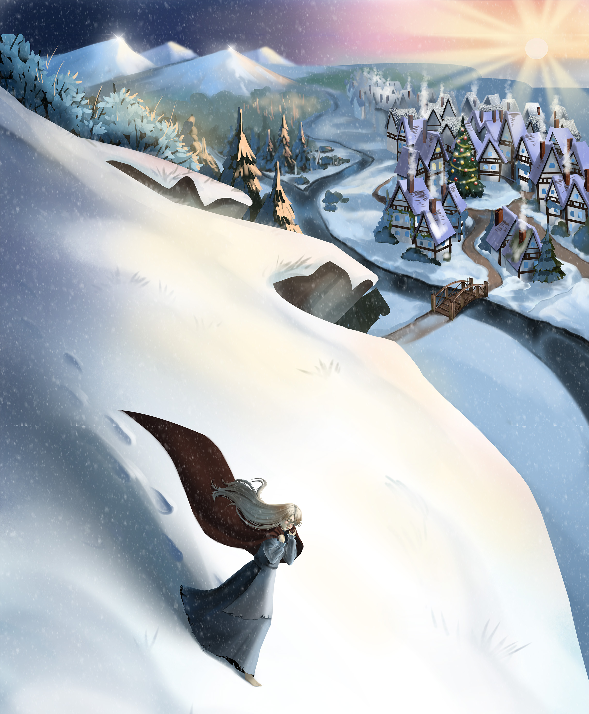
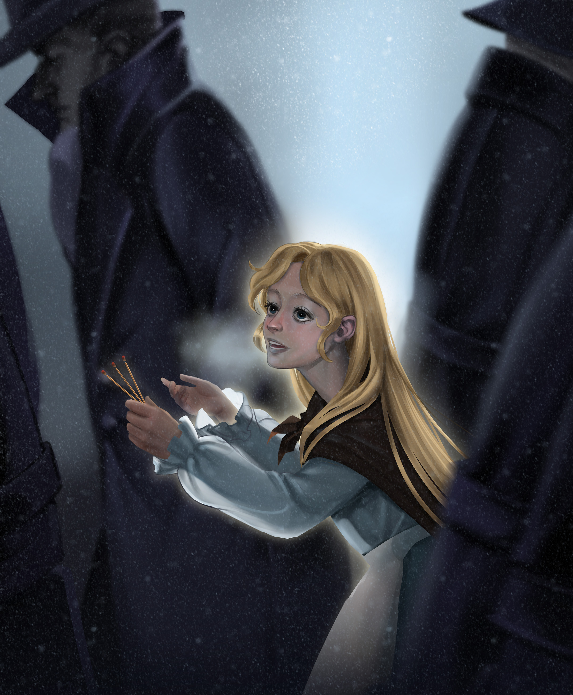
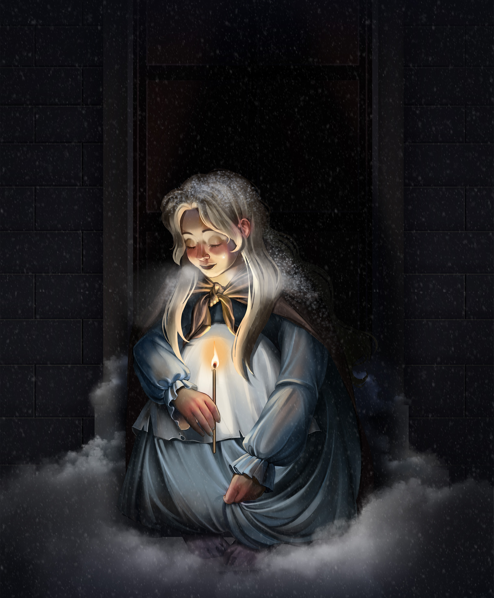
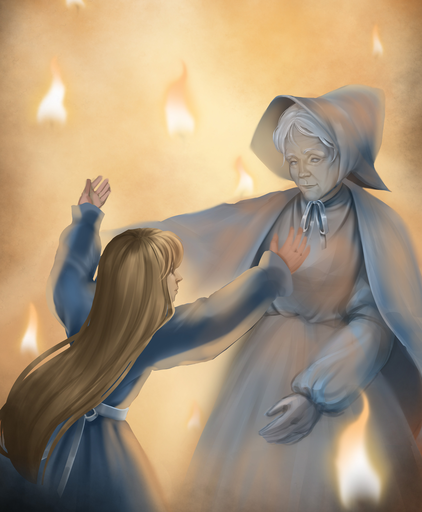
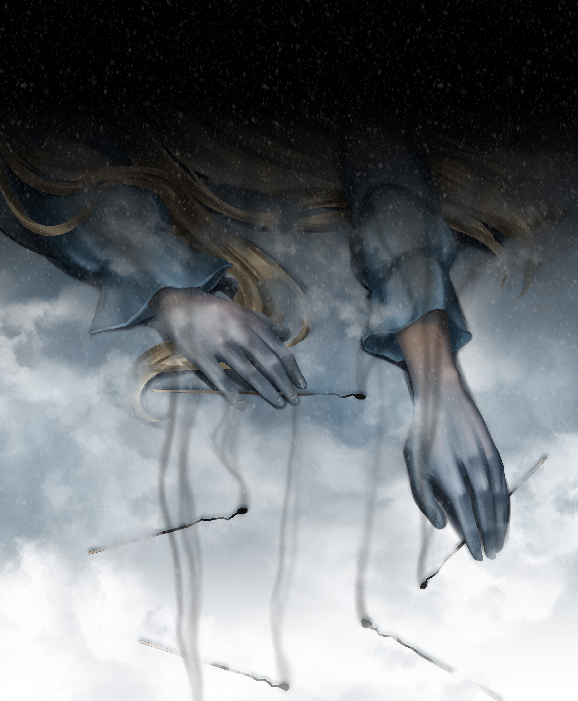

Zimno było, śnieg padał,
ściemniało się coraz
bardziej, wieczór się zbliżał.
Ostatni dzień roku
skończy się niedługo
Zima.
Przez ulice zasypane śniegiem,
w zmroku idzie dziewczynka bosa,
z gołą głową i coś niesie w fartuszku.

Drżała z zimna i głodu,
idąc z wolna przez ulice,
podobniejsza do cienia,
niż do żywego dziecka.
Białe płatki śniegu osiadały
jej na długich, jasnych włosach,
które ciepłym płaszczem osłaniały
plecy i szyję dziewczynki.
Ładnie jej było w tym złocistym
płaszczu ze srebrzystymi
gwiazdami nad czołem.

Usiadła wreszcie
Tak była zmęczona,
że nie mogła iść dalej.
Osiadła w kąciku
między dwoma domami.
Zresztą tak się skuliła,
skryła pod spódniczkę
zziębnięte nogi,
ażeby je rozgrzać…
Na wspomnienie ciepła
już nie ma siły oprzeć się
pokusie. Jedna zapałka tylko.
Wyjmuje ostrożnie, trzask… i płonie!
Cóż za wesołe światło, jasne i ciepłe,
ach, jak grzeje w ręce!
.

Znów zapłonęła zapałka i w świetle,
które zajaśniało, dziewczynka ujrzała
tę najdroższą babunię, całą jaśniejącą
ciepłym, łagodnym blaskiem.
Staruszka z miłością patrzała
na wnuczkę, uśmiechała się do niej.
— O, babciu, weź mnie z sobą!
— zawołało dziecko.
— O, weź mnie, babciu!
Ja wiem, że ty znikniesz, skoro
zapałka zgaśnie, jak zniknął
piec ciepły, gęś i choinka.
O, nie znikaj, babciu!

Nazajutrz w kąciku pod murem,
ujrzano zmarznięte ciało dziewczynki.
Na twarzy miała uśmiech na ustach.
Nikt się nie domyślił, co widziała
przed śmiercią w świetle tych kilku
drewienek i w jakim blasku wstąpiła do nieba.
❄
❄
❄
❄
❄
❄
❄
❄
❄
❄